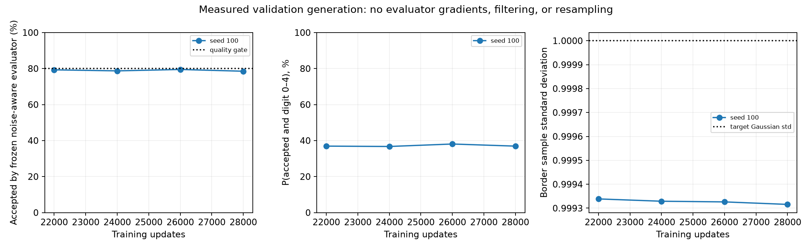
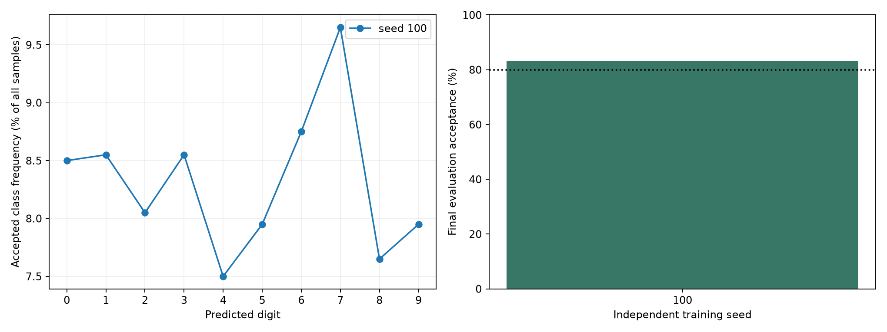
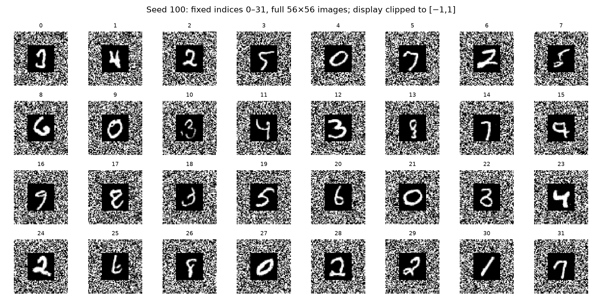

Inspect fixed-noise center crops
Each grid uses fixed indices 0–63. × indicates rejection by the frozen noise-aware evaluator.
FLOW STUDY · GENERATOR REPAIR · MEASURED DATA
Small shared spatial U-Net residual plus the analytic Gaussian velocity field. Spatial skip connections retain pixel-level paths; fixed mask/coordinate channels specify geometry. The noise-aware evaluator is frozen. No evaluator gradients, filtering, or resampling.
stopped_generation_quality_gate · 585.8 GPU-process seconds
Readable report · Raw measurements · Curves CSV · Protocol
| Seed | Training updates | Accepted | Invalid | Border mean / std |
|---|---|---|---|---|
| 100 | 28,000 | 83.10% | 16.90% | -0.000 / 0.999 |
All 2,000 outputs per model remain in the denominator. The prior failed model scored 2.15% with the same evaluator.


Each grid uses fixed indices 0–63. × indicates rejection by the frozen noise-aware evaluator.

These scores establish generator feasibility only. Acceptance remains a proxy; inspect individual images and class coverage. Border marginal mean/std do not establish independence. Teacher-specific transfer requires its own paired teachers, students, and controls.